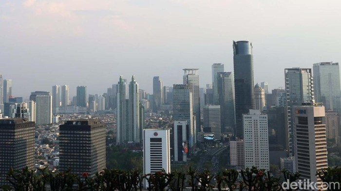

Menguji Target Ekonomi Ganjar-Mahfud dan Anies-Cak Imin, Mana Lebih Realistis?

Jakarta - Dua dari tiga bakal pasangan Calon Presiden (Bacapres) dan (Bacawapres) menaruh target tinggi untuk menggenjot angka pertumbuhan ekonomi Indonesia. Pasangan Anies Baswedan-Muhaimin Iskandar diketahui menargetkan pertumbuhan ekonomi 5,5% sampai 6,5%. Sementara pasangan Ganjar Pranowo - Mahfud MD menarget pertumbuhan ekonomi bisa mencapai 7%. Bisakah hal itu tercapai?
Masing-masing pasangan Bacapres-Bacawapres yakni Ganjar Pranowo-Mahfud MD (GAMA) dan Anies Baswedan - Muhaimin Iskandar (AMIN) diketahui menaruh target yang tinggi terhadap pertumbuhan ekonomi Indonesia.
Dalam berkas 'Menuju Indonesia Unggul: Gerak Cepat Mewujudkan Negara Maritim Yang Adil Dan Lestari', GAMA menargetkan pertumbuhan ekonomi Indonesia bisa mencapai 7%. Angka ini diperlukan agar Indonesia bisa keluar dari jebakan kelas menengah atau middle income trap secara inklusif. Menurut pasangan koalisi usungan PDIP, PPP, Partai Perindo, dan Partai Hanura itu, hal ini bisa dicapai dengan sejumlah strategi.
"Dengan meningkatkan peran koperasi dan UMKM, dukungan usaha baru di seluruh wilayah Indonesia, pemanfaatan infrastruktur, ekonomi digital, pengelolaan ekonomi hijau-biru, serta pertumbuhan industri manufaktur di 7,5-8%. Serta optimalisasi Kawasan Ekonomi Khusus untuk mempercepat industrialisasi dan investasi," tulis mereka.
Adapun pasangan AMIN, menargetkan pertumbuhan ekonomi atau produk domestik (PDB) bisa mencapai rata-rata 5-5% sampai 6-5% per tahun mulai 2025 sampai 2029. Menurut mereka, sejumlah ini bisa dicapai dengan memprioritaskan belanja produktif dan menekan belanja non produktif.
"Untuk menghasilkan ruang fiskal yang lebar dan pertumbuhan PDB rata-rata sebesar 5,5%- 6,5% per tahun (2025-2029)," tulis mereka dalam berkas bertajuk 'Indonesia Adil Makmur untuk Semua'.
Kepada detikcom, sejumlah ekonom memberikan pandangannya atas target pertumbuhan ekonomi masing-masing pasangan Bacapres-Bacawapres.
Institute for Development of Economics and Finance (INDEF) Nailul Huda, memberi pandangan yang kritis. Ia mengatakan akan sulit bagi kedua pasangan untuk mewujudkan pertumbuhan ekonomi rata-rata 6% apalagi sampai 7%. Menurutnya, kondisi perekonomia global saat ini tidak menentu.
"Perang geopolitik hingga perang dagang masih menghantui. Ditambah lagi era suku bunga tinggi saya rasa masih akan terjadi dalam beberapa tahun ke depan. Saya rasa sulit tercapai siapapun presidennya," ucapnya kepada detikcom, Senin (23/10/2023).
Adapun Direktur Center of Economic and Law Studies, Bhima Yudhistira, mengatakan visi dan misi target pertumbuhan masing-masing pasangan Capres-Cawapres memang ambisius namun terkesan sangat normatif.
Pasalnya, Bhima melihat perekonomian global diperkirakan masih akan melambat selama lima tahun ke depan. Penjelasan Bhima mengenai penyebab hal itu setali tiga uang dengan Nailul. Konflik geopolitik masih berlanjut, harga komoditas fluktuatif, bahkan ucapnya, saat ini sedang terjadi fenomena deglobalisasi.
Berbagai persoalan eksternal tersebut pun diperkuat dengan struktur ekonomi Indonesia yang sangat rapuh. "Masalahnya struktur ekonomi Indonesia sangat rapuh, mulai dari industrialisasi yang macet, ketergantungan ekonomi dari komoditas olahan primer yang menunggu booming komoditas. Padahal kita kan tidak tahu booming harga CPO, batubara, nikel bertahan berapa lama. Kalau sisi permintaan globalnya turun, misalnya China (yang) ekonominya (sedang) melambat, maka susah tumbuh di atas 5,5% apalagi 7%," bebernya kepada detikcom, Senin (23/10/2023).
Kendati demikian, Bhima mengatakan harus diakui, bahwa visi dan misi masing-masing pasangan Capres-Cawapres sudah baik karena membahas mengenai aspek ekonomi baru seperti transisi energi, ekonomi hijau, dan ekonomi digital. Ketiga hal ini penting untuk diusung sebagai motor pertumbuhan ekonomi.
Namun, kata Bhima, perlu dicatat pula bahwa ketergantungan teknologi impor serta kemampuan sumber daya manusia (SDM) yang berkorelasi dengan ekonomi baru tidak akan tuntas dalam kurun lima tahun.
"Belum lagi bicara soal masalah arah pembangunan infrastruktur era Jokowi yang belum sejalan dengan industrialisasi dan penurunan biaya logistik," sambungnya.
Oleh sebab itu, Bhima menjelaskan tugas masing-masing pasangan Bacapres-Bacawapres masih banyak. Mulai dari menguatkan lemahnya struktur ekonomi yang diwariskan Presiden Joko Widodo, sampai mendorong sumber ekonomi baru yang berkualitas.
Selain itu, alumni Universitas Bradford, Inggris ini juga mengingatkan, para pasangan Bacapres-Bacawapres jangan sampai mengejar pertumbuhan ekonomi yang tinggi namun melupakan kualitas pertumbuhan masyarakat.
"Seperti melebarnya ketimpangan, hingga masih banyaknya jumlah masyarakat rentan. Harus imbang antara pertumbuhan dan indikator kesejahteraan yang lebih merata. Jadi Pekerjaan rumahnya (PR) masih banyak ," tutupnya.
.png)
.png)